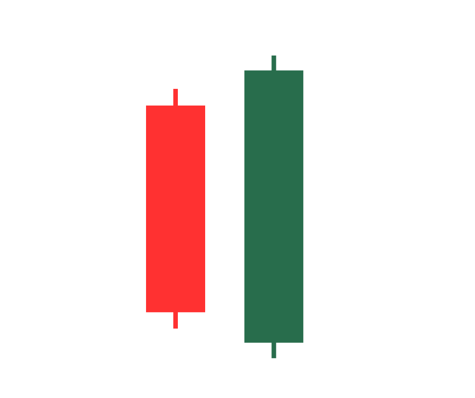
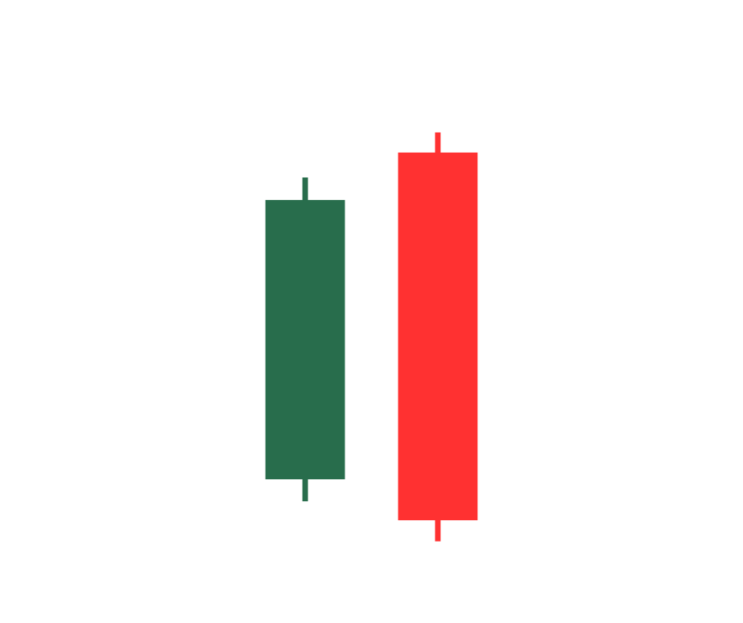
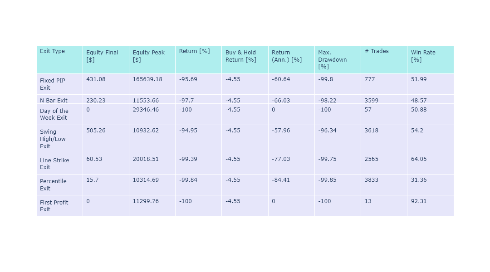
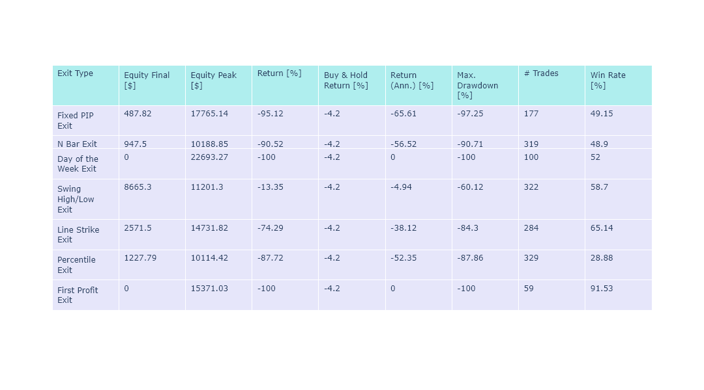
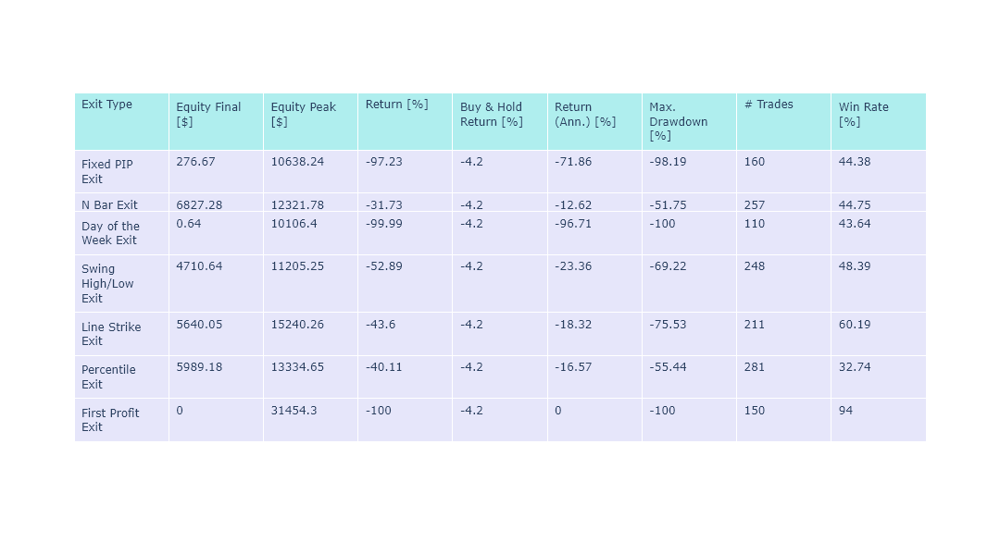

Engulfing Candlestick pattern on Forex#
Introduction#
The engulfing pattern is a powerful candlestick formation in technical analysis that can provide valuable insights into market sentiment and potential reversals. This pattern occurs when a larger candle fully engulfs the previous smaller candle, indicating a shift in momentum and a potential change in the prevailing trend. In this article, we will explore how to recognize both the bullish engulfing pattern and the bearish engulfing pattern, equipping you with the knowledge to identify these patterns and make informed trading decisions.
Recognizing the Bullish Engulfing Pattern#
The bullish engulfing pattern is a two-candle formation that signals a potential reversal from a downtrend to an uptrend. Here are the key characteristics to look for when identifying a bullish engulfing pattern:

The first candle is a smaller bearish candle, representing selling pressure.
The second candle is a larger bullish candle that completely engulfs the previous bearish candle, indicating a shift in momentum.
The bullish engulfing pattern often forms at significant support levels or after a period of selling exhaustion.
{kind=link}
The Psychology of the Bullish Engulfing Pattern#
The bullish engulfing pattern carries important psychological implications for market participants. When this pattern emerges, it signifies a shift in sentiment from bearishness to bullishness. Here’s a breakdown of the psychology behind the bullish engulfing pattern:
Initial Selling Pressure: The smaller bearish candle in the pattern reflects the prevailing selling pressure in the market. Sellers are in control, and pessimism dominates as prices decline.
Reversal Signal: The larger bullish candle that engulfs the previous candle represents a surge in buying interest. It indicates that buyers have stepped in, overpowering the sellers and reversing the downtrend.
Bulls Regain Confidence: The bullish engulfing pattern instills confidence in buyers, triggering a change in their mindset. They see an opportunity for a potential price turnaround and are motivated to enter long positions.
Momentum Shift: As more buyers enter the market, demand increases, pushing prices higher. This shift in momentum can attract additional market participants who were previously on the sidelines, creating further upward pressure.
Recognizing the Bearish Engulfing Pattern#
The bearish engulfing pattern is the opposite of its bullish counterpart, signaling a potential reversal from an uptrend to a downtrend. Here’s how to spot a bearish engulfing pattern:

The first candle is a smaller bullish candle, representing buying pressure.
The second candle is a larger bearish candle that engulfs the previous bullish candle, suggesting a shift in momentum and a possible trend reversal.
The bearish engulfing pattern is frequently observed at significant resistance levels or after a period of buying exhaustion.
{kind=link}
The Psychology of the Bearish Engulfing Pattern#
The bearish engulfing pattern also holds psychological significance, signaling a potential reversal from bullishness to bearishness. Understanding the psychology behind the bearish engulfing pattern is crucial for traders. Consider the following psychological dynamics:
Initial Buying Pressure: The smaller bullish candle in the pattern represents buying pressure, indicating a bullish trend. Buyers are in control, and optimism prevails as prices rise.
Reversal Signal: The larger bearish candle that engulfs the previous candle suggests a surge in selling interest. It indicates that sellers have regained control, overpowering the buyers and initiating a potential trend reversal.
Bears Gain Confidence: The bearish engulfing pattern boosts the confidence of sellers, encouraging them to take more short positions. They perceive an opportunity to profit from the anticipated price decline and act upon it.
Momentum Shift: With increased selling pressure, supply surpasses demand, leading to a downward push in prices. This shift in momentum can attract more sellers and create a self-reinforcing cycle of selling, further driving the prices lower.
Understanding the underlying psychology of the bullish and bearish engulfing patterns helps traders gauge market sentiment and anticipate potential trend reversals. By being aware of these psychological dynamics, traders can make more informed trading decisions and align their strategies with the prevailing market conditions. It is essential, however, to confirm these patterns with additional analysis and indicators to ensure robust trading strategies.
Paramters for the backtests#
For this particular analysis, we worked with the following parameters:
Starting balance: $10,000
Margin: 1:100
Commission: None
Testing period: From January 1, 2020, to December 31, 2022
Timeframe: 15 minutes
Currency pair: EURUSD
Data Source: Dukascopy
Backtesting the Engulfing bullish and bearish strategy#
Backtesting the Engulfing candlestick pattern by initiating long positions on the bullish Engulfing and short positions on the bearish Engulfing, while experimenting with various exit strategies, plays a vital role in assessing the efficacy of this trading methodology. Through the utilization of historical price data and the establishment of precise trading rules, traders can simulate trades based on the occurrence of Engulfing patterns.
By subjecting the strategy to diverse exit strategies, the profitability and resilience of the approach can be thoroughly evaluated. This comprehensive backtesting process enables traders to gain valuable insights into the potential profitability and risk management considerations when incorporating the Engulfing candlestick pattern into their trading strategies.
Buy Rules
Identify the bullish Engulfing candlestick.
Sell Rules
Identify the bearish Engulfing candlestick.
Results
{kind=link}
Backtesting the Engulfing candlestick and Pivot Points strategy#
In our rigorous testing, we’ve explored two versions of this strategy that we can’t wait to share with you. But that’s not all - we’re also going to push the boundaries and test it across a range of diverse exit strategies. Before we delve deeper, let’s take a moment to introduce the pivot points that play a pivotal role in our analysis. The pivot points we use are:
Version 1
Buy Rules
Close of the bullish Engulfing must be above the resistance pivot point.
Sell Rules
Close of the bearish Engulfing must be below the support pivot point.
Results
{kind=link}
Version 2
Buy Rules
Close of the bullish Engulfing must be below the support pivot point.
Sell Rules
Close of the bearish Engulfing must be above the resistance pivot point.
Results
{kind=link}
Source Code#
Here is the link to the source code for this zeta-zetra/code.